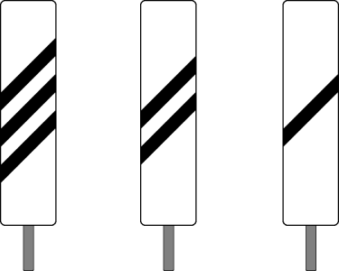
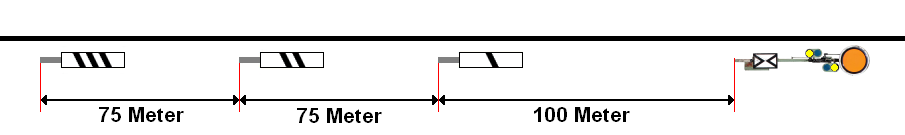

Übersicht und Erklärungen zu den Vorsignalbaken im Eisenbahnbetrieb.
01
BedeutungEin Vorsignal ist zu erwarten.
02
Beschreibung
Mehrere aufeinanderfolgende viereckige weiße Tafeln mit einem oder mehreren nach rechts steigenden schwarzen Streifen, deren Anzahl in Fahrtrichtung abnimmt.

03
Bauform
Vorsignalbaken sind hohe rechteckige Tafeln; bei beschränktem Raum werden niedrige rechteckige oder quadratische Tafeln aufgestellt.
04
Verwendung
Das Signal kann auch zur Ankündigung einer allein stehenden Vorsignaltafel aufgestellt sein.
05
Aufstellung
Vorsignalbaken stehen in der Regel nur auf Hauptbahnen.
06
Abstände
Es stehen in der Regel drei, in Ausnahmefällen auch weniger oder bis zu fünf Baken vor dem Vorsignal.
Die in der Fahrtrichtung letzte Bake steht 100 m vor dem Vorsignal; die anderen Baken stehen in je 75 m Abstand.

Bei Sichtbehinderung können die Baken auch in anderen Abständen stehen.
07
Tunnel
Vorsignalbaken in Tunneln sind rückstrahlend oder beleuchtet.
08
Ausnahmen
Vorsignale von Zwischen- und Ausfahrsignalen und Vorsignale, die an einem Hauptsignal stehen oder mit diesem an einem Signalträger vereinigt sind, werden nur in Ausnahmefällen, Vorsignalwiederholer und Wärtervorsignale werden nicht durch Baken angekündigt.
09
Verkürzter Vorsignalabstand
Ist der Abstand eines Vorsignals vom Hauptsignal um mehr als 5 % kürzer als der Bremsweg der Strecke, so trägt die erste Bake auf dem oberen Rand ein auf der Spitze stehendes weißes Dreieck mit schwarzem Rand. Bei beschränktem Raum kann es vor der Bake stehen. Das weiße Dreieck mit schwarzem Rand darf im Geltungsbereich der DV 301 bis auf Weiteres fehlen.